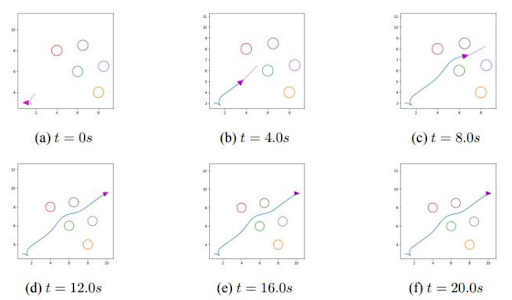
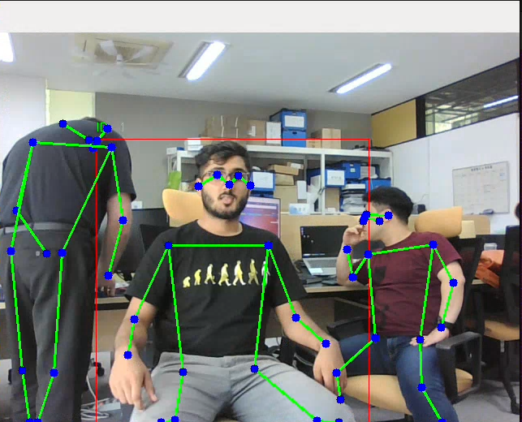
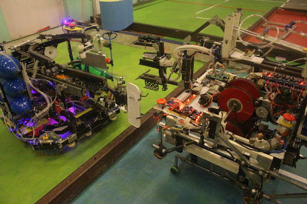
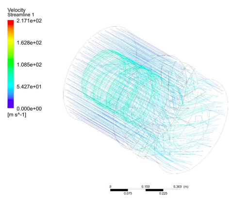
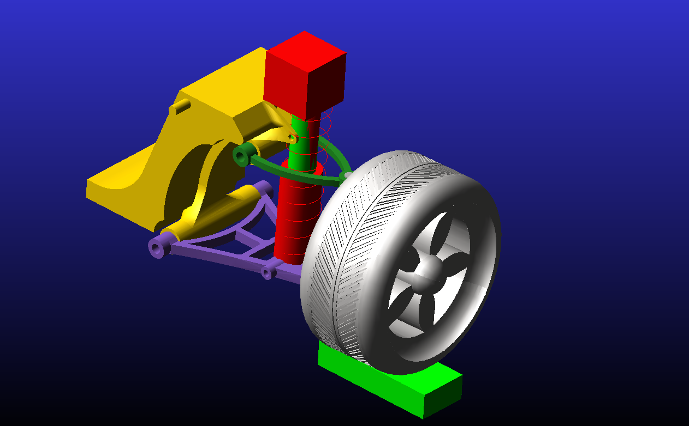

Research
Robotics research from policy learning to physical systems.
Publications and engineering projects spanning autonomous navigation, manipulation, control, perception, and mechanical design.
01 Publications & Preprints

LCLA: Language-Conditioned Latent Alignment for Vision-Language Navigation
A framework for vision-language navigation that aligns sensory observations to a latent representation of an expert policy. The method decouples perception from control through a lightweight adapter, enabling expert behavior reuse across different sensing modalities and environments without full retraining. Achieves generalizable robot navigation guided by natural language instructions.

Find the Fruit: Zero-Shot Sim2Real RL for Occlusion-Aware Plant Manipulation
A sim2real reinforcement learning framework for autonomous harvesting in complex, occluded plant environments. Decouples high-level kinematic planning from low-level compliant control. Achieves an 86.7% success rate in exposing target fruits. The policy trains entirely in simulation and transfers zero-shot to real robotic hardware.
02 Robotics & Autonomy

Full MPC Navigation Stack in ROS 2
MPC-based autonomous navigation stack for wheeled robots built on ROS 2. Implemented in Python with NUMBA JIT acceleration. Uses CasADi framework with the IPOPT solver for real-time optimal path generation and tracking.

Optimal Trajectory Generation for Autonomous Navigation of Wheeled Robots
Path planning and optimal trajectory generation for wheeled robot autonomous navigation using MPC. Built on ROS architecture with embedded hardware (Arduino + Raspberry Pi). Complete implementation from algorithm to hardware deployment.
Autonomous Environment Exploration Algorithm
Custom frontier-based exploration algorithm for autonomous map creation in ROS 2. Implemented in Python with NUMBA JIT compilation for real-time performance on constrained robotic hardware.

MPC for Autonomous Trajectory Generation of UAV
Autonomous trajectory generation for Unmanned Aerial Vehicles using Model Predictive Control. Implemented using CasADi library in MATLAB, based on full kinematic and dynamic models of the quadrotor UAV.

Person Re-identification Pipeline
Full person detection, tracking, and re-identification pipeline built with YOLO, DeepSort, and OpenCV. Handles target selection and robust re-identification in dynamic multi-person environments.
03 Mechanical Design & Competition

ABU Robocon — Mechanical Design & Mentoring
Designed, built, and mentored multiple ABU Robocon teams (2018–2021). Participated in international competitions in China, Mongolia, and Vietnam. Responsible for mechanical design, fabrication, and control systems. Won the ROHM Special Award at ABU Robocon 2019 in Mongolia.

Design and CFD Analysis of an Axial Flow Compressor
Full design and CFD analysis of an axial flow compressor for gas turbine engines using the mean line method. ANSYS Fluent used for steady-state flow simulation and performance validation.

Active Hydraulic Suspension System — Design & Control
Kinematic and dynamic analysis of an active hydraulic suspension system. PID control designed and validated via ADAMS–MATLAB Simulink co-simulation. Work extended from an internship at E-bolt Tech involving 2-wheeler suspension analysis.
Interested in this work?
Open to research collaborations and discussions across robotics and embodied AI.